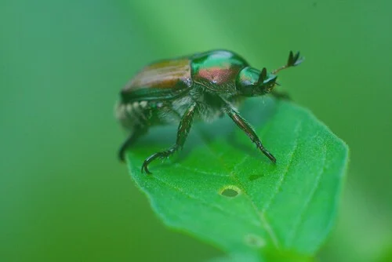

Metallic beetles gather on sunlit roses and skeletonize foliage
Japanese beetles often congregate on a favored flower or a sunlit part of a shrub. Their feeding can be concentrated enough to leave a patch of ragged petals beside almost untouched foliage. Inspect an adult closely before using the leaf damage to identify a metallic beetle.

Where to look
Check sunny upper foliage and open flowers for groups of beetles. Feeding between the veins leaves a lacy leaf, while petals can be chewed through. Check a beetle from the side while it rests. A top-down view can show copper and green clearly but hide the white tufts around the abdomen, especially when the beetle is buried headfirst in a flower.
What confirms it
Inspect the side of a beetle for small white tufts along its abdomen beneath coppery wing covers. Combine these with its metallic green body when identifying it.
Similar damage
Other beetles can skeletonize leaves. The arrangement of white tufts helps distinguish Japanese beetles from other metallic scarabs on flowers.
What to do
On a few valued plants knock adults into a container of soapy water early in the day. Revisit plants where beetles have already begun to aggregate.
Follow-up
Check newly opened buds and fresh upper leaves. Adults can fly in from surrounding areas, so finding a beetle on a rose does not locate its larval feeding site.